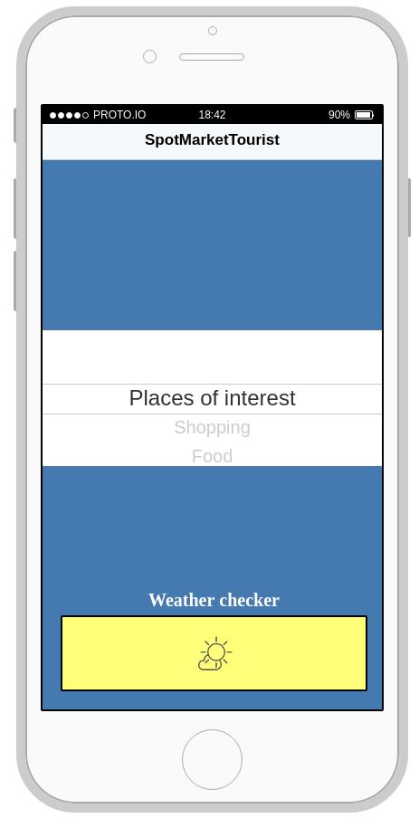
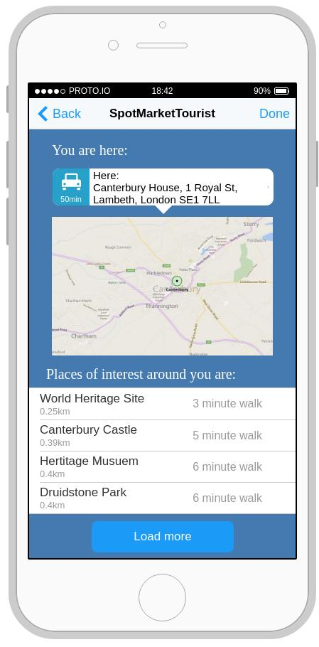
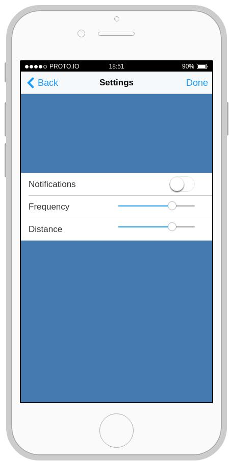
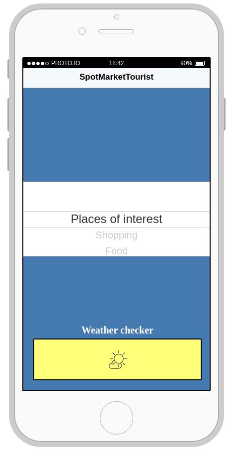
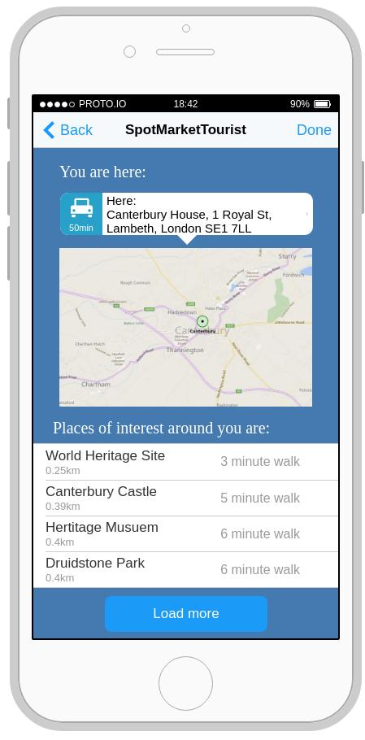
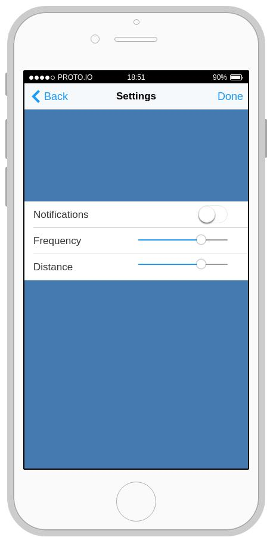

Initial app prototypes
 





Heuristic Evaluation
We carried out heuristic evaluations to see if our prototype fit a collection of standardised heuristics that have been gathered*. We analysed each page of the app against the set heuristics. Our findings were:
Match between system and the real world* - we have successfully made it accessible to our users by using language over system symbols or other alternatives. At the moment however, we realise that it may only be accessible to some since we have only provided the app in English and it doesn’t support other languages.
Aesthetic and minimalist design* - We have minimized the amount of text in the app by introducing popular symbols in their place accompanied by words. Our color scheme also matches the Microsoft colour palette so that it makes it easier for the user to recognise the product.
Recognition rather than recall* - To prevent the user getting lost in the app pages, we have minimized the number of app pages so that they don’t lose track of where they are. They can also go back to previous page and home page from any point.